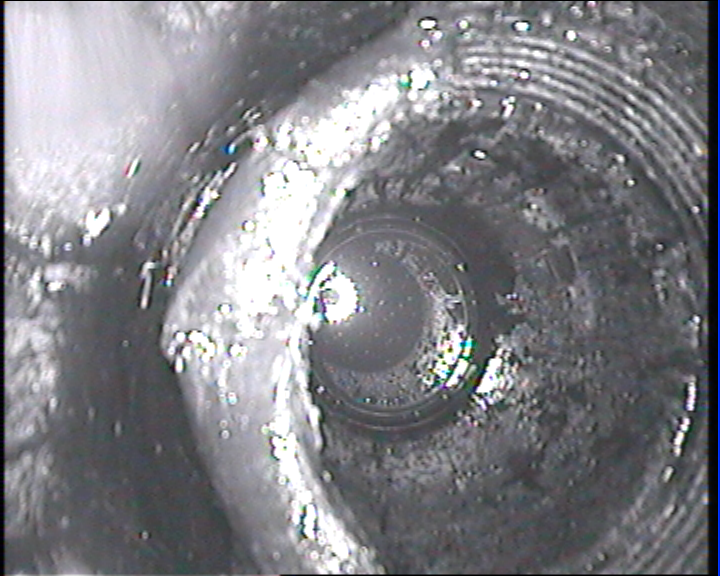
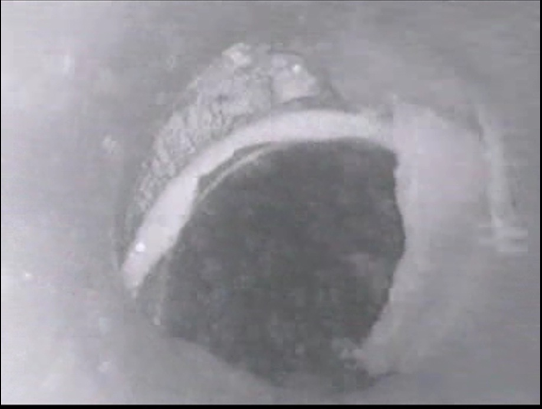
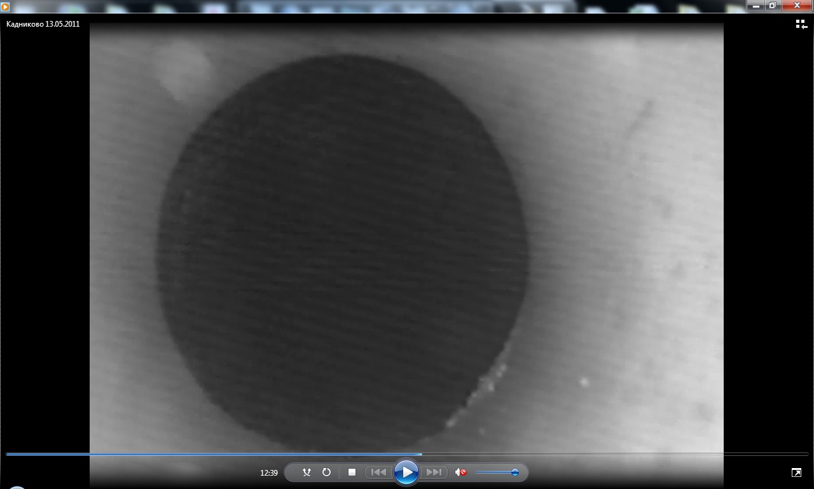
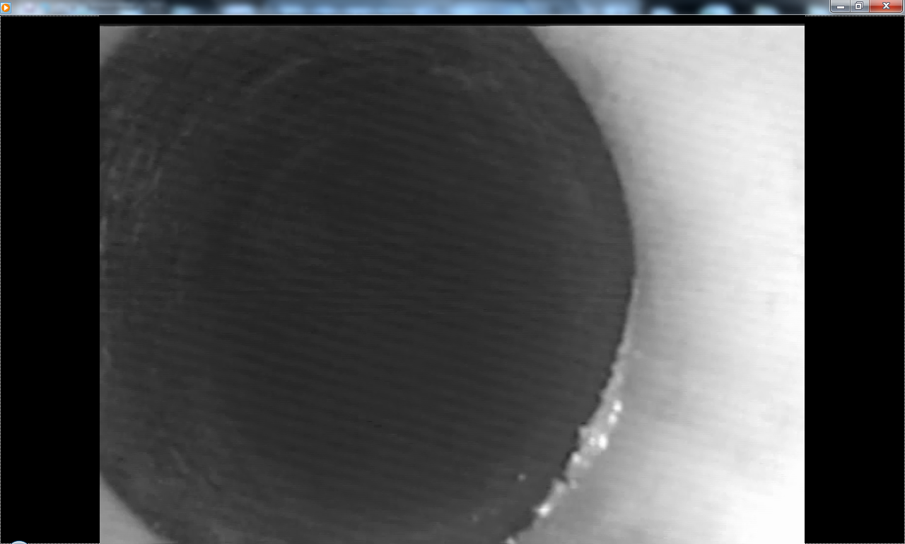
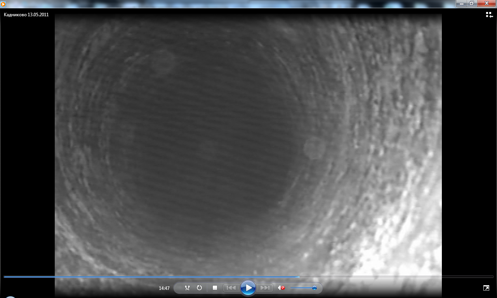
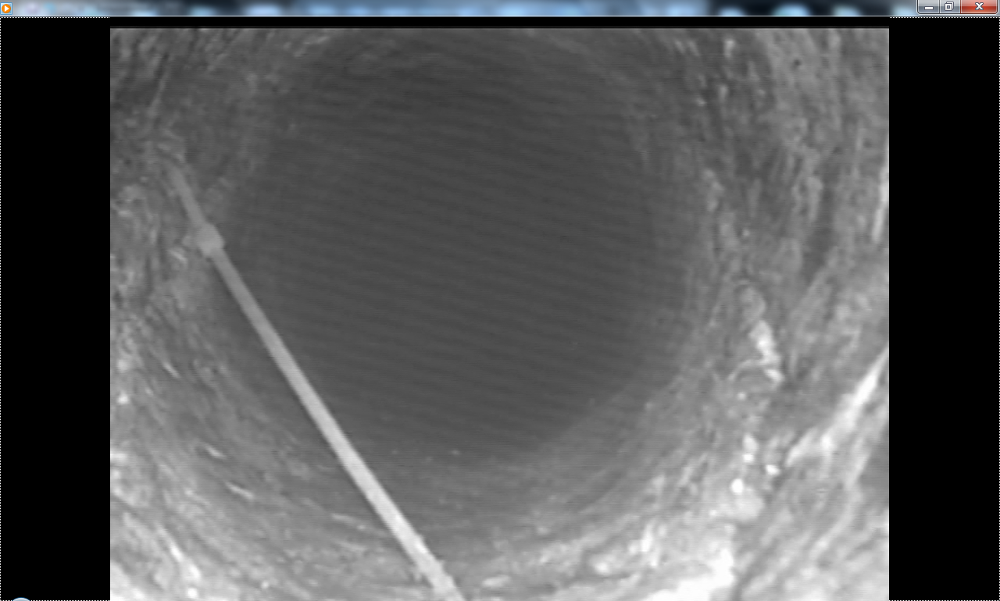
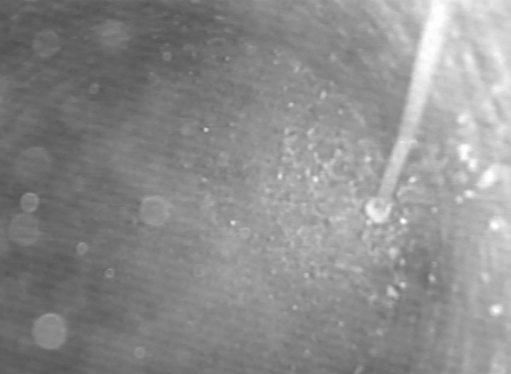

Для любого человека очень важно качество воды, которую он
употребляет, ведь от этого напрямую зависит его
здоровье. Очень удобным и распространенным
способом получения качественной питьевой воды для
жителей загородных домов является бурение скважины для личного
использования.
Бурение скважины — задача, которая только на первый взгляд
может показаться простой и легкой. На самом деле,
бурение гидроскважин без соблюдения всех
необходимых правил, норм и требований технологии
производства буровых работ может привести к
нежелательным последствиям.
Теледиагностика (обследование) — наблюдение за происходящим на глубине,
внутри скважин,
при помощи видеокамеры и монитора. Полученные фото и
видеоматериалы высокого качества, что позволяет
увидеть малейшие повреждения на стенах труб.
Как правило, при возникновении проблем с гидроскважиной,
бурильщики предлагают пробурить новую скважину. Подход вполне понятен:
неизвестно состояние забоя (дна) скважины, неизвестно каким диаметром
заканчивается ваша скважина, неизвестно есть ли в скважине посторонние
предметы, неизвестно качество установки и длина обсадной колонны.
Немаловажную роль играет и материальная составляющая.
Средние цены на бурение скважин на воду сложились следующие:
- Бурение - 1100 руб./м
- Стальная обсадная труба - 900 руб./м
- Полиэтиленовая обсадная труба - 500 руб./м
На бурение 30 м новой скважины затраты примерно такие:
| Бурение | | 30х1100=33000 руб. |
|
| Стальная обсадная труба | | 15х900=13500 руб. |
|
| Полиэтиленовая обсадная труба | | 30х500=15000 руб. |
|
| Итого | | 61500 руб. |
|
Теледиагностика позволяет определить источник проблем с Вашей
скважиной, и найти адекватные, бюджетные пути и способы ремонта скважины.
Стоимость теледиагностики - 5000 руб.
(Если скважина на расстоянии до 50км от города, глубиной - до 50м. Для больших расстояний и глубин затраты немного выше.)
Предлагаются услуги по теледиагностике (видеокаротажу) буровых
скважин. Работы выполняются в Свердловской, Челябинской, Пермской области
Цели теледиагностики:
1. Контроль качества выполненных буровых работ
2. Диагностика проблем в буровой скважине
3. Видеозапись процесса теледиагностики.
4. Заключение специалиста (акт, экспертное заключение).
5. Рекомендации по решению выявленных проблем.
6. Помощь в решении споров по бурению скважин.
Услуги:
- Теледиагностика
- Видеодиагностика
- Очистка скважин
- Эрлифт (аэрлифт) - откачка сильнозагрязненной воды специальными средствами
- Желонирование - удаление отложений со дна скважины механическим способом
- Ремонт скважин
- Консультации специалиста (стаж буровых работ более 20 лет)
- Контроль качества работ при бурении скважин
- Периодический осмотр (состояние скважины и необходимость предупредительных мер)
- Контроль качества периодических работ (подтверждение чистоты, ремонта, состояния скважины и соответствия работ заданию)
- Контроль до покупки скважины или объекта (контроль состояния скважины)
- Мониторинг подземных вод (определение качества, минеральных условий, геологических слоев и т.д.)
- Контроль содержимого (оставленное или потерянное оборудование, части и осколки)
Звоните, и мы Вам поможем!
Телефоны: +7 965 503 8284, +7 922 229 90 52






